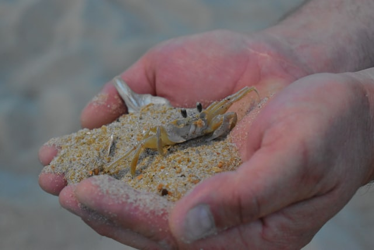
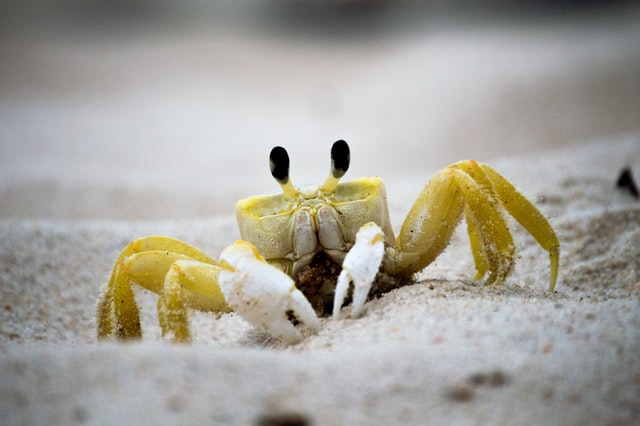
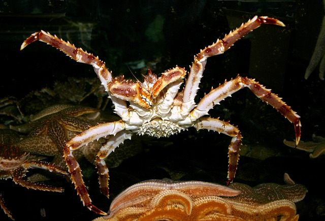
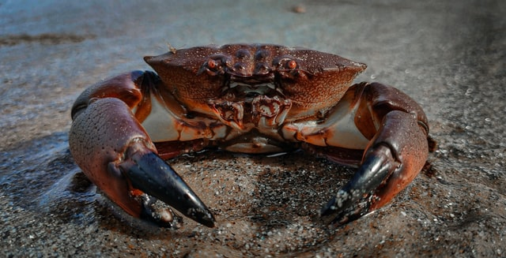
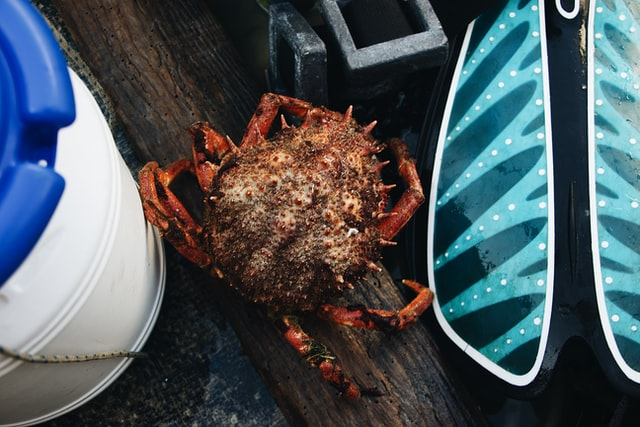
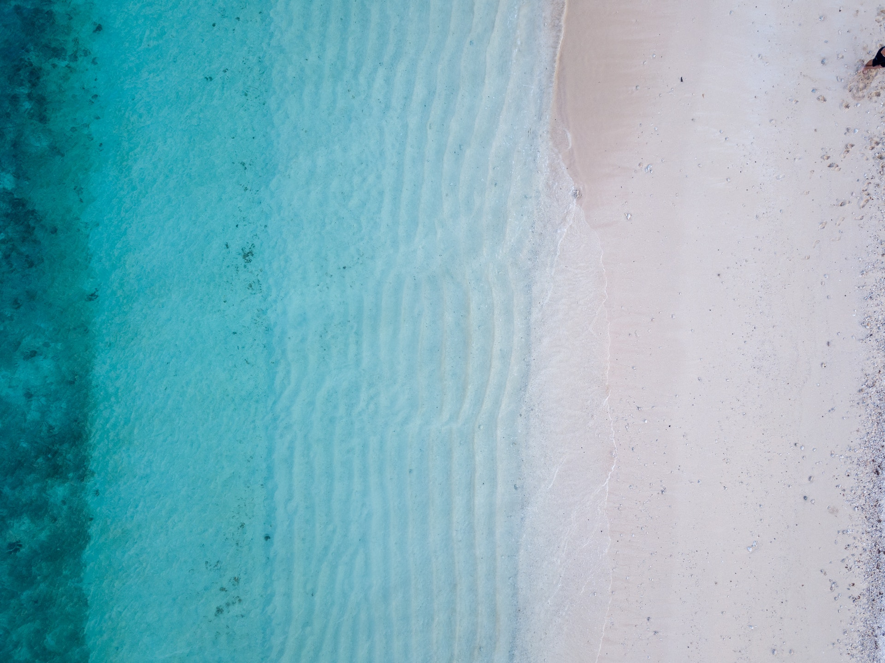

Crabs are crusteacans and amazing animals, found all over the globe.
Some live in saltwater, some in freshwater or even on land.
They come in all kind of forms and shapes.
You can watch them, play with them, or even cook and eat them.
Even nature loves them, leading other crusteacans on the evolutionary
path to become a crab through carcinization.
Click below to appreciate!






A red king crab, not an OG crab, but through carcinization now crab shaped
A westatlantic ghost crab, spooky and burrow loving beings, which can bubble a tune!
A maya squinado or european spider crab, similar looking to the Japanese spider crab
A florida stone crab, very delicious and related to the gulf stone crab
"Your eye is perceiving a crab when you see this round, kind of oval shape"
-Jo Wolfe
Join the decapod army! Ten legs to victory!
Why walk in all directions, when sideways is the way to go?
Just click the oval shape on the right!